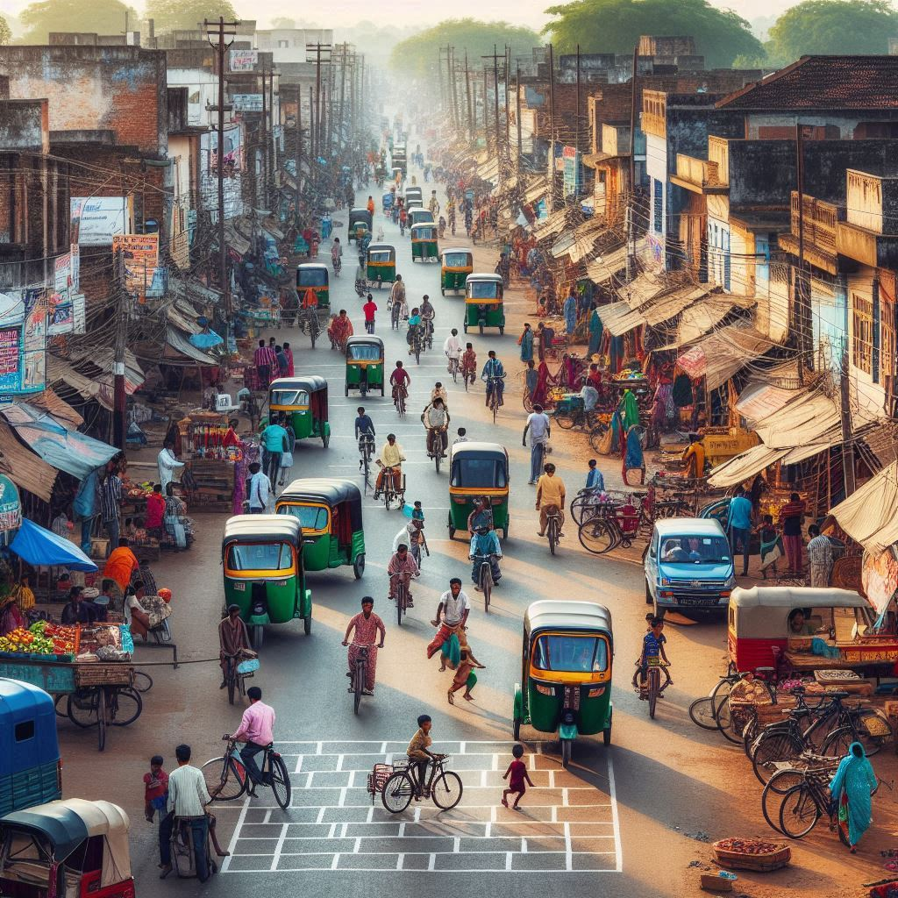
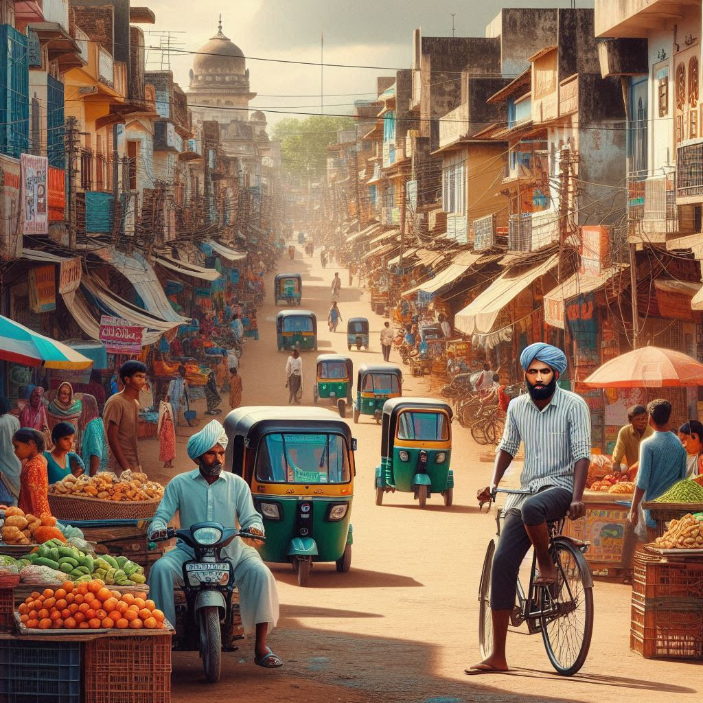

Transportation in Chhattisgarh is well-developed, with various modes facilitating the movement of people and goods across the state. The infrastructure supports both urban and rural areas, ensuring connectivity within the region and to other parts of India. Here’s an overview of the transportation system in Chhattisgarh:
1. Road Transport
- National and State Highways: Chhattisgarh has a well-maintained network of national and state highways connecting major cities and towns. The NH-6 and NH-30 are key national highways that traverse the state, facilitating trade and travel.
- Buses: The state-run Chhattisgarh State Road Transport Corporation (CSRTC) operates bus services connecting urban and rural areas. These buses provide affordable and convenient transportation options for daily commuters and travelers.
- Auto-rickshaws and Taxis: Auto-rickshaws and taxis are commonly used for short distances within cities and towns. Ride-sharing services are also gaining popularity in urban areas.
2. Rail Transport
- Railway Network: Chhattisgarh is well-connected by rail, with several major railway stations, including Raipur, Bilaspur, and Durg. The railway network facilitates the movement of passengers and goods, playing a crucial role in the state’s economy.
- Indian Railways: Chhattisgarh falls under the South East Central Railway Zone of Indian Railways. Trains connect major cities in Chhattisgarh to other states, making it convenient for long-distance travel.
3. Air Transport
- Airports: The state has a few domestic airports, with Swami Vivekananda Airport in Raipur being the primary airport. It connects Chhattisgarh to major cities across India, providing convenient air travel options for residents and tourists.
- Heliports: There are also heliports in some districts for specific purposes, including tourism and government services.


4. Water Transport
- Rivers and Inland Waterways: While not extensively developed, there are opportunities for water transport along rivers like the Mahanadi. Initiatives are being taken to explore the potential of inland waterways for cargo transportation.
5. Urban Transport
- Public Transport: In urban areas, public transportation systems like buses and auto-rickshaws are widely used. The Raipur city bus service provides an organized way to navigate the city.
- Metro Projects: Plans for metro rail systems in major cities like Raipur are being discussed to enhance urban mobility and reduce traffic congestion.
6. Challenges and Developments
- Infrastructure Development: While the transportation infrastructure in Chhattisgarh is improving, challenges remain in terms of maintenance, road safety, and connectivity to remote areas. The government is working on upgrading and expanding transportation facilities to meet growing demands.
- Sustainability Initiatives: Efforts are being made to promote sustainable transport options, including encouraging electric vehicles and improving public transportation systems to reduce reliance on private vehicles.
Conclusion
Chhattisgarh's transportation system plays a vital role in supporting its economic growth and ensuring connectivity for its residents. With a mix of road, rail, air, and water transport options, the state is continuously working to improve its infrastructure, making it easier for people to travel and for goods to be transported. The ongoing development initiatives are aimed at enhancing the efficiency and sustainability of transportation in Chhattisgarh.